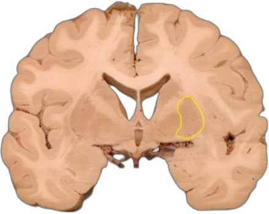

<html>
    <head>
        <meta charset="utf-8"/>
        <title>Kapitoly</title>
        <script src="chapterScript.js"></script>
        <link rel="stylesheet" href="kapitolaStyles.css">
        <link rel="stylesheet" href="../hamburgerStyles.css">
        <link rel="preconnect" href="https://fonts.googleapis.com">
        <link rel="preconnect" href="https://fonts.gstatic.com" crossorigin>
        <link rel="stylesheet" href="https://fonts.googleapis.com/css2?family=Nunito:wght@200..1000&display=swap">
    </head>
    <body onload="load()">
        <!--Header START-->
        <div id="header">
            <div id="logoPart">
                
            </div>
        </div>
        <!--Header END-->

        <!--Hameburger START-->
        <input id="toggle" type="checkbox"></input>

        <label for="toggle" class="hamburger">
        <div class="top-bun"></div>
        <div class="meat"></div>
        <div class="bottom-bun"></div>
        </label>

        <div class="nav">
            <div class="nav-wrapper">

                <!--MENU START-->
                <nav>
                    <a href="../index.html">Home</a><br>
                    <a href="../kapitoly.html" id="activeMenu">Kapitoly</a><br>
                    <a href="../frontalni.html">Anatomické řezy</a><br>
                    <a href="../mri.html">MRI řezy</a><br>
                    <a href="#">3D modely</a><br>
                    <a href="#">Slovník</a><br><br><br>
                    <a href="#">O projektu</a>
                </nav>
                <!--MENU END-->

            </div>
        </div>
        <!--Hameburger END-->

        <div class="content">
            <div id="chaptersHolder">
                <div id="chapters">
                    <a href="chapter.html?chapter=0" class="chapter" id="chapter0">Micha</a><br>
                    <a href="chapter.html?chapter=1" class="chapter" id="chapter1">Kmen</a><br>
                    <a href="chapter.html?chapter=2" class="chapter" id="chapter2">Cerebellum</a><br>
                    <a href="chapter.html?chapter=3" class="chapter" id="chapter3">Diencephalon</a><br>
                    <a href="chapter.html?chapter=4" class="chapter" id="chapter4">Telencephalon</a><br>
                    <a href="chapter.html?chapter=5" class="chapter" id="chapter5">Retikularni formace</a><br>
                    <a href="chapter.html?chapter=6" class="chapter" id="chapter6">CHS </a><br>
                    <a href="chapter.html?chapter=7" class="chapter" id="chapter7">Limbicky system</a><br>
                    <a href="chapter.html?chapter=8" class="chapter" id="chapter8">Cevy</a><br>
                    <a href="chapter.html?chapter=9" class="chapter" id="chapter9">Komory</a><br>
                    <a href="chapter.html?chapter=10" class="chapter" id="chapter10">Cisterny </a><br>
                    <a href="chapter.html?chapter=11" class="chapter" id="chapter11">Pleny</a><br>
                    <a href="chapter.html?chapter=12" class="chapter" id="chapter12">Embryologie</a><br>
                </div>
            </div>
            <div class="actualHolder">
                <div class="actual">
                    <p id="text">
                        <div class="line"></div>
                        <h1>1 ÚVOD</h1>
                        <p class="regular">
                            Mícha je součást CNS přenášející informace z těla do vyšších etáží CNS a naopak informace z 
                            vyšších etáží do těla a je rovněž centrem jednoduchých míšních reflexů. Probíhá v páteřním kanále 
                            a je obalena plenami. Dělí se na 31 segmenty, přičemž z každého segmentu odstupuje jeden míšní 
                            nerv (C1-C8, T1-T12, L1-L5, S1-S5, Co1).
                        </p>
                        <p class="regular">
                            Míchu lze rozdělit na bílou a šedou hmotu přičemž v šedé hmotě se nachází především těla 
                            neuronů. 
                            <br> Šedou hmotu můžeme dělit dvěma způsoby, na
                        </p>
                        <ul class="regular">
                            <li>Rexedovy laminy</li>
                            <li>Jádra</li>
                        </ul>
                        
                        <p class="regular">
                            bílá hmota obsahuje především ascendentní a descendentní dráhy
                        </p>
                        <h4>Míchou probíhají základní ascendentní dráhy vedoucí</h4>
                        <ul class="regular">
                            <li>tah, tlak, vibrace, jemnou kožní citlivost a propriocepci - tr. <b>spino</b>-bulbo-thalamo-corticalis</li>
                            <li>rychlou bolest (nocicepci) a termocepci - tr. <b>spino</b>-thalamicus</li>
                            <li> pomalou, chronickou bolest - tr. <b>spino</b>-reticularis</li>
                            <li> pohybocit a polohocit do moze!ku - tr. <b>spino</b>-cerebellaris anterior (pohybocit z DK a dolní 
                                poloviny trupu), tr. <b>spino</b>-cerebellaris posterior (polohocit z DK a dolní poloviny trupu), tr. 
                                <b>spino</b>-cerebellaris rostralis (pohybocit z HK a horní poloviny trupu), tr. <b>spino</b>-cuneocerebellaris (polohocit z HK a horní poloviny trupu)</li>
                            <li>nformace pro kontrolní okruhy mozečku - tr. <b>spino</b>-olivo-cerebellaris </li>
                        </ul>
                        <h4>a descendentní dráhy vedoucí informace o</h4>
                        <ul class="regular">
                            <li>volním pohybu - tr. cortico-<b>spinalis</b> (anterior et lateralis)</li>
                            <li>nap#tí posturálního (antigravita!ního svalstva) - tr. vestibulo-<b>spinalis</b> lateralis</li>
                            <li>souhybech hlavy a o!í a stabilizaci hlavy a krku p"i ch$zi - tr. vestibulo-<b>spinalis</b> medialis</li>
                            <li>vlivu retikulární formace - tr. reticulo-<b>spinalis</b></li>
                            <li>odpov#di na sluchové a zrakové podn#ty a souhybu hlavy a o!í - tr. tecto-<b>spinalis</b></li>
                            <li>ktivaci p"edevším proximálních flexor$ HK a inhibici proximálních extenzor$ HK - tr. rubro<b>spinalis</b></li>
                            <li>descendentním tlumení bolesti - tr. raphe-<b>spinalis</b></li>
                        </ul>
                        <p class="note">více viz. kapitola dráhy {odkaz na kapitolu}</p>
                        <br>

                        <div class="line"></div>
                        <h1>2 STAVBA</h1>
                        <h2>2.1 MAKROSKOPIE MÍCHY</h2>
                        <ul class="regular">
                            <li>Kraniální ohrani!ení </li>
                            <ul>
                                <li>Decussatio Pyramidum</li>
                                <li>Foramen Magnum</li>
                                <li>Odstup nervu C1</li>
                            </ul>
                            <li> Kaudální ohrani!ení</li>
                            <ul>
                                <li>Conus Medullaris</li>
                                <li>Meziobratlová ploténka L1-L2</li>
                            </ul>
                            <li>Cauda Equina - pokra!ování míchy ve form# nervových ko"en$ bederních, k"ížových a 
                                kostr!ního ko"enu.</li>
                            <li>Filum Terminale - gliový provazec navazující na conus medullaris, v k"ížové oblasti sr$stá s dura 
                                mater a s periostem os sacrum</li>
                            <li>Fissura mediana anterior</li>
                            <li>Sulcus anterolateralis </li>
                            <ul>
                                <li>místo výstupu fila radicularia anteriora</li>
                            </ul>
                            <li> Sulcus posterolateralis </li>
                            <ul>
                                <li>místo výstupu fila radicularia posteriora</li>
                            </ul>
                            <li> Sulcus intermedius</li>
                        </ul>
                        <p class="regular">
                            V oblasti kr!ní, bederní a sakrální míchy nacházíme také tzv. intumescence 
                            neboli nadu"ení. Tyto intumescence odpovídají segment$m kde ostupují míšní nervy zásobující 
                            kon!etiny
                        </p>
                        <ul class="regular">
                            <li>Intumescentia cerivcalis</li>
                            <li>Intumescentia lumbosacralis</li>
                        </ul>
                        <h2>2.2 MÍŠNÍ SEGMENTY</h2>
                        <p class="regular">
                            Funk!ní jednotka dána výstupem fila radicularia do jednoho páru míšních nerv$. Segmentace míchy 
                            není na povrchu patrná, míšní segmenty jsou pouze funk!ní a klinický koncept daný vztahy míchy k 
                            jednotlivým míšním nerv$m. Mícha jako taková má tedy charakter kontinua, a bílou i šedou hmotu 
                            si lze p"edstavit spíše jako kontinuální sloupce. 
                        </p>
                        <p class="regular">Každý Míšní segment se skládá ze dvou !ástí</p>
                        <h3>2.2.1 BÍLÁ HMOTA</h3>
                        <ul class="regular">
                            <li> p"evážn# myelinizované axony (proto má bílý až nažloutlý vzhled)</li>
                            <li> bílá hmota je rozd#lena výstupy fila radicularia na provazce</li>
                            <ul>
                                <li>  Funiculus anterior</li>
                                <li>  Funiculus lateralis</li>
                                <li>  Funiculus posterior</li>
                                <ul>
                                    <li>   rozd#len sulcus intermedius na fasciculus 
                                        cuneatus a fasciculus gracilis</li>
                                </ul>
                            </ul>
                        </ul>
                        <h3>2.2.2 ŠEDÁ HMOTA</h3>
                    </p>
                </div>
            </div>
        </div>
    </body>
</html> 